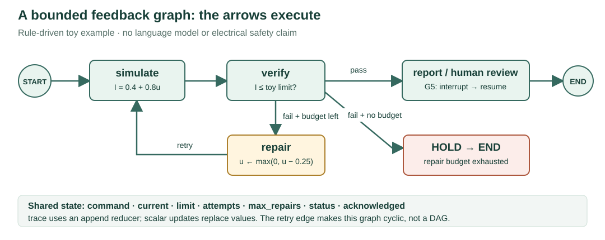

Run this notebook · Separate prerequisites · Executed validation
Six-minute G0–G4 core; optional G5 checkpoint and simulated readback. Rule-driven invented toy equation, no LLM call or electrical validation. LangGraph 1.2.15 was executed; the main grid workflow remains custom Python.
From a flowchart to an executable graph
Six-minute core exercise, G0–G4; optional checkpoint/resume extension, G5.
Before using agents for grid problems, learn what the runtime actually does. This notebook executes a real LangGraph StateGraph with ordinary Python functions. It makes no LLM call. A node is a function; it may later call a solver, a language model, or another service. The graph runtime does not make the function intelligent or its output physically correct.
You will trace three outcomes: a passing proposal, a successful bounded repair, and exhausted repair budget. Then pause at a simulated operator review and resume the same checkpoint.
Install once before class
Use Python 3.12 and a dedicated virtual environment, keeping this optional lesson separate from the main numerical environment:
python -m venv .venv-graph
.venv-graph\Scripts\python -m pip install -r requirements_graph_lab.txt
.venv-graph\Scripts\python -m jupyter lab Graph_Workflow_Lab.ipynb
Select the new environment's kernel. Run cells from top to bottom. After installing prerequisites, execution is offline: no API key, Ollama, hosted tracing, OpenDSS or remote image renderer is needed. The executed reading page is available without installing anything.
The visual model

A directed acyclic graph (DAG) has directed edges and no directed cycles. A simple sequence is a DAG. Our repair arrow returns to simulation, making a directed graph with a bounded cycle, not a DAG. LangGraph supports this feedback structure.
The state is the shared record. Nodes return partial updates. Edges select which node runs next. The append reducer keeps trace entries; ordinary scalar fields are replaced. This exercise is sequential: no parallel execution or multi-agent speedup is claimed.
G0 · Confirm the runtime
Predict: do you need an LLM to run a node? No: the graph only schedules functions and combines their state updates.
The pinned tested version is LangGraph 1.2.15. Hosted tracing is explicitly disabled. Version output describes the installed runtime; it is not a runtime-performance comparison.
Code · cell 1
import os, time, json, uuid
from importlib.metadata import version
from typing import Annotated, TypedDict
from operator import add
os.environ["LANGSMITH_TRACING"] = "false"
os.environ["LANGCHAIN_TRACING_V2"] = "false"
from langgraph.graph import StateGraph, START, END
from langgraph.checkpoint.memory import InMemorySaver
from langgraph.types import interrupt, Command
from src.graph_workflow_lab import initial_state, recommendation_id, summary
versions = {name: version(name) for name in ("langgraph", "langgraph-checkpoint", "langchain-core")}
print(versions)
print("Rule-driven toy graph. No LLM, network call or electrical-model validation."){'langgraph': '1.2.15', 'langgraph-checkpoint': '4.3.0', 'langchain-core': '1.6.12'}
Rule-driven toy graph. No LLM, network call or electrical-model validation.
G1 · Declare state; distinguish replacement from accumulation
Predict: if one node writes a trace entry and the next writes another, should the first disappear?
Each scalar update replaces its previous value. For trace, Annotated[list[str], add] specifies list concatenation, so new trace entries accumulate. Return only the new entry; returning the full history would append duplicates.
TypedDict describes the schema for type checkers and the graph. It does not enforce numeric ranges at runtime. The initial_state helper validates the input boundary explicitly.
Code · cell 2
class TrialState(TypedDict):
command: float
limit: float
attempts: int
max_repairs: int
current: float
passed: bool
status: str
acknowledged: bool
trace: Annotated[list[str], add]
seed = initial_state(command=0.75, limit=0.80, max_repairs=2)
print("Append reducer:", add(["simulate"], ["verify"]))
print("Initial validated state:", seed)Append reducer: ['simulate', 'verify']
Initial validated state: {'command': 0.75, 'limit': 0.8, 'attempts': 0, 'max_repairs': 2, 'current': 0.0, 'passed': False, 'status': 'TOY_NEW', 'acknowledged': False, 'trace': []}
G2 · Write tiny node functions and a stopping rule
The deliberately invented relation is toy current = 0.4 + 0.8 × command. Both quantities use arbitrary toy units. It is not Ohm's law, a feeder model, a sensitivity learned from data, or an engineering safety certificate.
Verification compares that toy current with a declared limit. A repair reduces command by 0.25 and consumes one repair. The router reads the updated state: pass → report; failure with budget → repair; failure without budget → HOLD. A tiny floating-point tolerance avoids rejecting an equality because of numerical representation.
Predict before G4: command 0.75 gives current 1.0. With limit 0.8, what command and current follow one repair?
Code · cell 3
def simulate(s):
value = 0.4 + 0.8 * s["command"]
return {"current": value, "trace": [f"simulate: {value:.3f}"]}
def verify(s):
ok = s["current"] <= s["limit"] + 1e-12
return {"passed": ok, "trace": [f"verify: {ok}"]}
def repair(s):
return {"command": max(0., s["command"] - 0.25),
"attempts": s["attempts"] + 1, "trace": ["repair: -0.25"]}
def ready(s):
return {"status": "TOY_READY", "trace": ["report: ready"]}
def hold(s):
return {"status": "TOY_HOLD", "trace": ["hold: budget exhausted"]}
def route(s):
if s["passed"]:
return "report"
return "repair" if s["attempts"] < s["max_repairs"] else "hold"G3 · Turn the drawing into a StateGraph
Nodes and fixed edges are registered first. The conditional edge calls route after verification. Its explicit mapping also makes the permitted branches inspectable. The repair edge closes the cycle. compile returns an executable graph; it does not execute the nodes.
The report function is an explicit extension point. G5 replaces it with a human-review node and adds a checkpointer. No old notebook is silently migrated to LangGraph.
Sources: official Graph API and StateGraph API reference.
Code · cell 4
def build_graph(report_node=ready, checkpointer=None):
builder = StateGraph(TrialState)
nodes = {"simulate": simulate, "verify": verify, "repair": repair,
"report": report_node, "hold": hold}
for name, function in nodes.items():
builder.add_node(name, function)
builder.add_edge(START, "simulate")
builder.add_edge("simulate", "verify")
builder.add_conditional_edges("verify", route,
{"report": "report", "repair": "repair", "hold": "hold"})
builder.add_edge("repair", "simulate")
builder.add_edge("report", END)
builder.add_edge("hold", END)
return builder.compile(checkpointer=checkpointer)
app = build_graph()
print("Compiled nodes:", sorted(app.get_graph().nodes))Compiled nodes: ['__end__', '__start__', 'hold', 'repair', 'report', 'simulate', 'verify']
G4 · Execute three paths and inspect the actual trace
Do: run the three supplied inputs and keep their reference assertions unchanged. For the challenge, use a separate scratch cell to run app.invoke(initial_state(0.90, 0.50, 4), {"recursion_limit": 40}). Predict its result before execution. This new input has four allowed repairs rather than one.
The explicit repair budget controls the algorithm. The runtime recursion limit is a separate last-resort guard against a programming mistake; it is not the business stopping rule. Timings below measure local graph execution after imports and compilation, with no model inference or network latency.
Code · cell 5
cases = {"passing": (0.25, 0.80, 2), "repair": (0.75, 0.80, 2),
"exhausted": (0.90, 0.50, 1)}
results, elapsed_ms = {}, {}
for name, args in cases.items():
started = time.perf_counter()
results[name] = app.invoke(initial_state(*args), {"recursion_limit": 40})
elapsed_ms[name] = 1000 * (time.perf_counter() - started)
print(name, json.dumps(summary(results[name])), f"{elapsed_ms[name]:.3f} ms")
assert [results[k]["status"] for k in cases] == ["TOY_READY", "TOY_READY", "TOY_HOLD"]
assert [results[k]["attempts"] for k in cases] == [0, 1, 1]
assert results["repair"]["trace"] == ["simulate: 1.000", "verify: False",
"repair: -0.25", "simulate: 0.800", "verify: True", "report: ready"]
from src.graph_workflow_lab import fixed_baseline
for name, args in cases.items():
baseline = fixed_baseline(initial_state(*args), simulate, verify, repair, route, ready, hold)
assert summary(baseline) == summary(results[name])
print("Direct Python baseline matches every command, outcome and trace: 3/3.")passing {"command": 0.25, "current": 0.6000000000000001, "limit": 0.8, "attempts": 0, "status": "TOY_READY", "acknowledged": false, "trace": ["simulate: 0.600", "verify: True", "report: ready"]} 2.129 ms
repair {"command": 0.5, "current": 0.8, "limit": 0.8, "attempts": 1, "status": "TOY_READY", "acknowledged": false, "trace": ["simulate: 1.000", "verify: False", "repair: -0.25", "simulate: 0.800", "verify: True", "report: ready"]} 1.163 ms
exhausted {"command": 0.65, "current": 0.92, "limit": 0.5, "attempts": 1, "status": "TOY_HOLD", "acknowledged": false, "trace": ["simulate: 1.120", "verify: False", "repair: -0.25", "simulate: 0.920", "verify: False", "hold: budget exhausted"]} 1.029 ms
Direct Python baseline matches every command, outcome and trace: 3/3.
Answer and a six-minute stopping point
Passing: command 0.25, toy current 0.60, zero repairs. Repaired: command 0.50, current 0.80, one repair. Exhausted: command 0.65, current 0.92 exceeds limit 0.50 after one allowed repair, so HOLD. All trace entries remain because the reducer appends. With four repairs, the exhausted case reaches command 0 and current 0.4, which meets the toy limit. These are outcomes of an invented equation, not electrical findings.The direct-Python baseline calls the same node functions and routing rule with a conventional loop. It returns exactly the same commands and trace in all three cases. LangGraph changes how execution, state and pause/resume are organized; it does not improve this equation or its controller. These single-run times are not a performance benchmark.
Bridge to the grid labs: replace the toy simulator with an explicit adapter to OpenDSS or LinDistFlow; replace the toy checker with numerical and policy checks. An MPC tool or saved SAC actor can propose controls. An LLM may choose an allowed refinement. The runtime coordinates calls and state; each tool still owns its method, contract, limitations and evidence.
The existing five-stage grid workflow is custom Python. This notebook is a separate LangGraph teaching example, not evidence that those archived grid runs used LangGraph.
G5 · Optional: checkpoint, interrupt, inspect and resume
Predict: does reaching the review node mean the operator has already approved? No. interrupt yields a payload and leaves the run pending.
InMemorySaver stores checkpoints in the current process only. A stable thread_id identifies which suspended run to resume. Production recovery needs a persistent backend; restarting this notebook loses the in-memory store.
The node restarts from its beginning on resume. Keep work before interrupt pure or idempotent; this example only computes a readback ID. Never place an equipment command before a human interrupt. The scripted response below is an explicitly simulated student acknowledgment, not a real operator's approval or equipment action.
Sources: official interrupts guide, interrupt API, and persistence guide.
Code · cell 6
def human_review(s):
token = recommendation_id(s)
reply = interrupt({"recommendation_id": token, "command": s["command"],
"toy_current": s["current"], "scope": "invented toy equation only"})
accepted = (isinstance(reply, dict) and reply.get("approve") is True
and reply.get("recommendation_id") == token)
return {"acknowledged": accepted,
"status": "TOY_ACKNOWLEDGED" if accepted else "TOY_HOLD",
"trace": [f"human review: {accepted}"]}
review_app = build_graph(human_review, InMemorySaver())
config = {"configurable": {"thread_id": "student-" + uuid.uuid4().hex}, "recursion_limit": 40}
pause = review_app.invoke(initial_state(0.75, 0.80, 2), config)
snapshot = review_app.get_state(config)
print("Pending node:", snapshot.next, "| acknowledged:", snapshot.values["acknowledged"])
print("Interrupt payload:", pause["__interrupt__"][0].value)
assert snapshot.next == ("report",) and not snapshot.values["acknowledged"]
response = {"approve": True, "recommendation_id": recommendation_id(snapshot.values)}
resumed = review_app.invoke(Command(resume=response), config)
print("After simulated readback:", summary(resumed))
assert resumed["acknowledged"] and review_app.get_state(config).next == ()Pending node: ('report',) | acknowledged: False
Interrupt payload: {'recommendation_id': '73cfb263ed2b1016', 'command': 0.5, 'toy_current': 0.8, 'scope': 'invented toy equation only'}
After simulated readback: {'command': 0.5, 'current': 0.8, 'limit': 0.8, 'attempts': 1, 'status': 'TOY_ACKNOWLEDGED', 'acknowledged': True, 'trace': ['simulate: 1.000', 'verify: False', 'repair: -0.25', 'simulate: 0.800', 'verify: True', 'human review: True']}
Optional challenges and expected observations
In a separate scratch cell, create a fresh thread, invoke the graph to obtain its interrupt, then resume with approve=False: the run should end in TOY_HOLD. Repeat with a wrong recommendation ID: it should also hold. Assert the expected negative outcome rather than reusing G5's positive acknowledgment assertion. A different thread ID identifies a different run, so it cannot resume this checkpoint. Nothing here validates a person's identity. The review payload and state must be bound to a trusted request and trusted evidence in a deployed application.What transfers to the scientific tutorial
| Runtime idea | Existing grid-workflow responsibility |
|---|---|
| Shared typed state | Request, model scope, candidates, evidence identities and budgets |
| Node function | Awareness, planning, simulation, verification or optimization responsibility |
| Conditional edge | Refine, retain, HOLD or request operator review |
| Append reducer | Retain successive trace events instead of replacing the audit trail |
| Checkpoint + interrupt | Suspend a particular recommendation for a separate readback |
An LLM is one possible implementation inside a node. MPC, SAC, WLS and OpenDSS are different tools or models that a node may call. A role label is not a separate trained model. A workflow with several nodes is not automatically multi-agent intelligence.
Exit question: explain why this graph can repair an action without being a DAG, and why a graph runtime cannot certify a power-system control.